Creating a Sierpinski Curve in Desmos
This guide will walk you through the process of creating an Arrowhead Sierpinski Curve in Desmos.
- Prerequisite
- Sierpiński Curve
- Sierpiński Curve Iterations
- Creating the sequence in Desmos
- plot the points
- Final result
Prerequisite
Creating Points
- To define a point in Desmos, use Parentheses
():A = (3,4). - Access the x-coordinate of a point with
A.xand the y-coordinate withA.y.
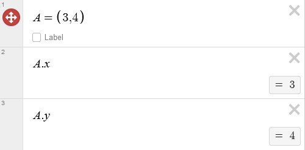
Passing points as a parameter
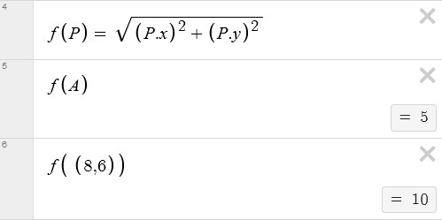
Piecewise function
A piecewise function is typically expressed in the following form in desmos: $$ f(x)= \lbrace condition1:expression1, condition2:expression2,\ldots,conditionN:expressionN \rbrace $$ Example:
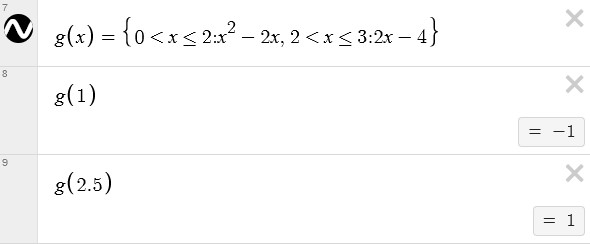
Lists
To create a list, you can use square brackets, like [1, 2, 3, 4, 5].
You can assign a list to a variable. This allows you to access the list’s elements. Indexing in desmos list starts from 1 not 0.
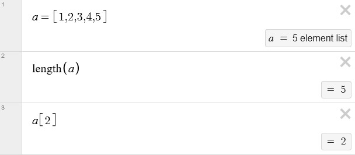
You can create a list of coordinates in the form [(2, 3), (3, 3)], and you can assign this list to a variable. Once the list is assigned to a variable, you can access the individual coordinates within the list using that variable. You can use the variable to access specific points within the list and their individual x and y coordinates as needed for various mathematical operations and graphing purposes.
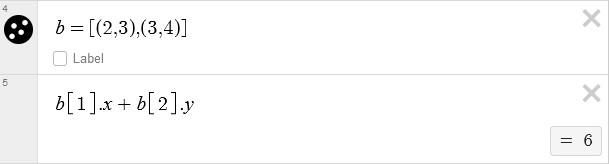
Action
Desmos Action is the key to making your graph interactive.
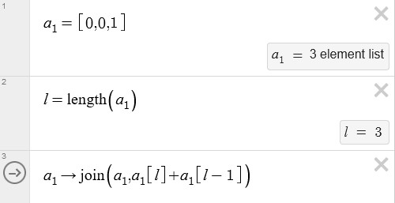
This is a simple action setup:
- Start by adding the last two elements of the list. In this case, 0 + 1 = 1.
- Next, join the list with this sum. This operation results in a new list, [0, 0, 1, 1].
- Finally, set the value of variable $a_1$ to this combined list.
This action is evaluated every time the arrow is clicked.
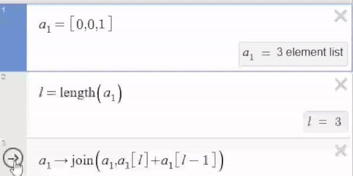
Sierpiński Curve
The Sierpiński arrowhead curve is a fractal pattern. You can create this pattern using two substituting production rules: (A → B-A-B) and (B → A+B+A). The symbols + and - denote turning 60 degrees either to the left or right. Follow these step-by-step instructions to draw the Sierpiński arrowhead curve:
-
Start with a straight line segment, representing the initial axiom, A.
-
Apply the following rules iteratively to create the fractal pattern:
- Replace each ‘A’ with ‘B-A-B’.
- Replace each ‘B’ with ‘A+B+A’.
-
After applying the rules, your drawing will consist of a sequence of A and B symbols.
-
Translate the symbols into actions as follows:
- ‘A’ or ‘B’: Draw a line segment.
- ‘+’: Turn 60 degrees to the left.
- ‘-’: Turn 60 degrees to the right.
Sierpiński Curve Iterations
Initial Axiom: A
1st Iteration:
- Apply the rules:
- A → B-A-B
- B → A+B+A
- Result after the 1st iteration: B-A-B
2nd Iteration:
- Apply the rules to the result of the 1st iteration:
- B → A+B+A
- A → B-A-B
- B → A+B+A
- Result after the 2nd iteration: A+B+A-B-A-B+A+B+A
3rd Iteration:
- Apply the rules to the result of the 2nd iteration:
- A → B-A-B
- B → A+B+A
- A → B-A-B
- B → A+B+A
- A → B-A-B
- B → A+B+A
- A → B-A-B
- B → A+B+A
- A → B-A-B
- Result after the 3rd iteration: B-A-B+A+B+A-B-A-B+A+B+A-B-A-B+A+B+A-B-A-B
Creating the sequence in Desmos
For creating this sequence, we utilize numbers in place of letters, representing them with ‘1’ for ‘A’ and ‘2’ for ‘B’. To start, we establish four distinct lists:
A = [2, -1, 2]
B = [1, 2, 1]
A_1 = [-2, -1, 2] (to be used when '1' is negative)
B_1 = [1, 2, 1] (to be used when '2' is negative)
Next, we create two additional lists:
a_rray1: [1]
a_rray2: []
we implement an action that involves the examination of each element within $a_{rray1}$ and its corresponding interaction with $a_{rray2}$, based on specific conditions. These conditions dictate which of the four lists we created at the beginning will be joined with $a_{rray2}$. The value of $n$ is incremented each time the action is called.
For each element a_rray1:
If a_rray1[n] equals 1:
Join a_rray2 with list A
Else if a_rray1[n] equals -1:
Join a_rray2 with list A_1
Else if a_rray1[n] equals 2:
Join a_rray2 with list B
Else if a_rray1[n] equals -2:
Join a_rray2 with list B_1
To restrict the number of times the first action can be called, we can use the inequality
$n \leq length(a_{rray1})$. Once this condition is no longer met, we move on to other actions in the sequence. we implement another action as follows:
Copy the elements from a_rray2 to a_rray1.
Clear a_rray2, effectively making it an empty list.
Set n to 1.
Repeat the process for more iterations.
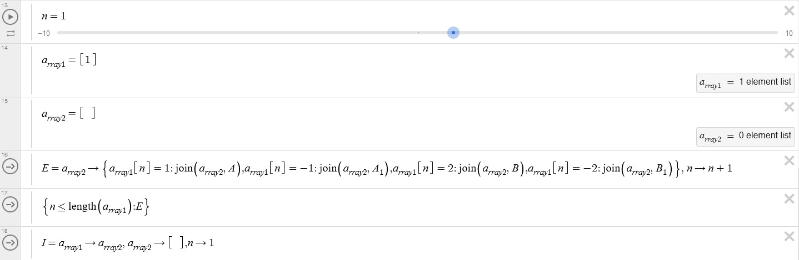
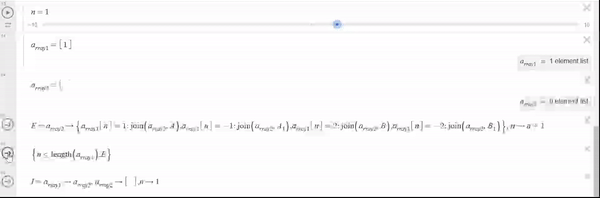
plot the points
- We start with a list of coordinates:
- C = [(0, 0), (1, 0)]
- Calculate a vector
Vthat goes from the previous point to the current point:V = C[l] - C[l-1]. - Create a function $f$ that takes a vector $v$ and an angle $\phi$ as parameters and returns a new point C[l] + v rotated by the angle $\phi$ .
iis increased everytime the action is called.
For each element in a_rray1:
If a_rray1[i] less than 0:
join C with f(V,-60)
Else if:
join C with f(V,60)
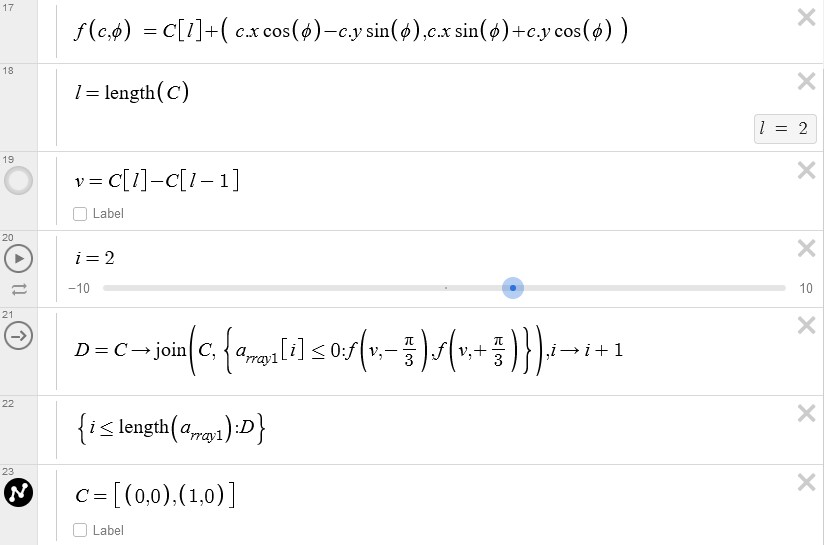
To ensure that our points are updated whenever $a_{rray1}$ changes, we can reset the variables i and C. To achieve this, simply reset i to 1 and the list of coordinates C to its initial state when we update $a_{rray1}$.
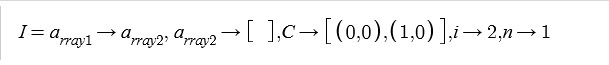
You can simplify the process by using a ticker. Just assign an action to a variable, and then refer to it in the ticker using the variable name. This method automates the action calls, eliminating the need to manually click the arrow every time an action is to be executed.
Final result
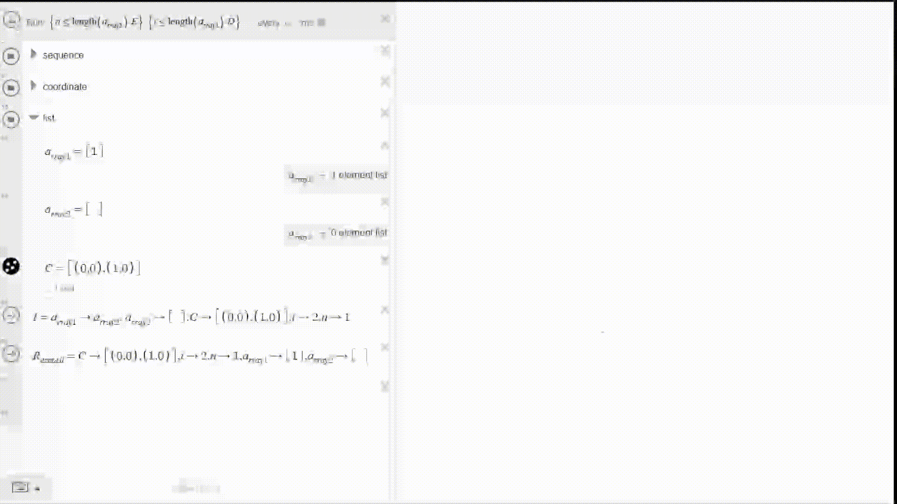
Here is the link to desmos file
I want to say a big thank you for reading my first blog post, and I appreciate your patience with any imperfections. Thank you for being a part of this journey.